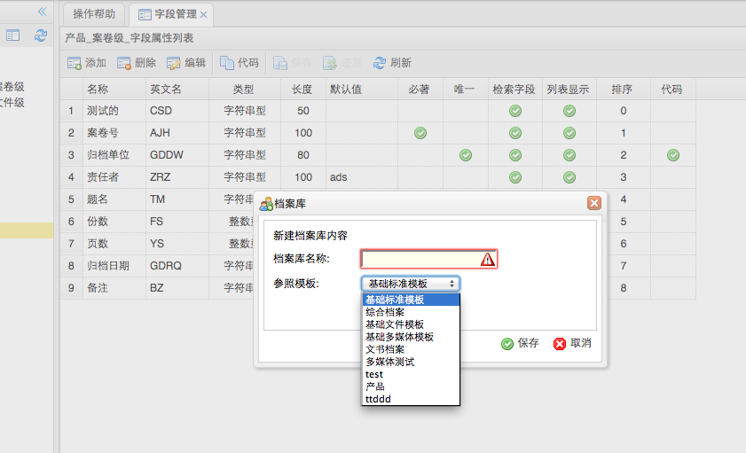

-
- 操作流程
- 点击首页功能菜单［系统维护－档案库维护］，打开档案库维护。
- 档案库维护，包括了档案库模版管理、档案树节点管理、档案模版字段管理。
- 档案库模版管理包括模版的创建、修改、删除功能。
- 每个档案库模版就是一个档案类型，存储一类档案。例如产品档案、文书档案等国家规定的档案结构，每个模版都有独立的字段管理。
- 系统默认创建了三个档案基础模版，［基础标准模版］、［基础文件模版］、［基础多媒体模版］。
- 添加新档案类型
-
- 点击添加档案类型按钮，弹出添加档案类型框，输入档案类型名称信息，选择参考模版（参考模版的字段来创建新档案类型）点击保存按钮。
-

- 按照模版添加一个新档案类型后，可以继续添加新档案类型特有的字段属性。
- 添加完新档案类型，请点击［刷新］按钮。
- 删除档案类型
- 选择要删除的档案类型，点击［删除］按钮，确认删除。
-
- 删除档案类型将同时删除档案类型下的档案节点和包含的所有条目数据、电子全文，将不能再恢复，请谨慎操作。
- 请不要删除［基础］模版。
- 修改档案类型
- 选择要修改的档案类型，点击［修改］按钮，弹出修改档案类型信息框，输入修改信息，点击保存按钮。
- 修改档案类型时，只能修改档案类型的名称。